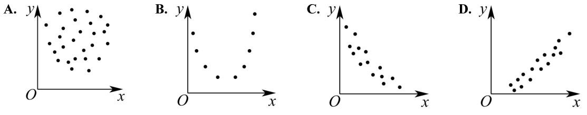
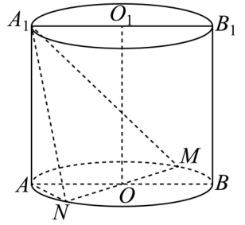

01 【来源：闵行26二模·1】
查看所属专题已知集合 ，，则 ______。
作答区
整卷阅读 · 学生版 · 21 题
按来源题号排列；内容来自分类汇编，仍需回源核对。
没有找到匹配题目。
已知集合 ，，则 ______。
设 ，不等式 的解集是______。
已知球的表面积为 ，则该球的体积为______。
已知 ，若 是幂函数，且 ，则 ______。
已知事件 发生的概率 ，事件 发生的概率 ，若事件 与 独立，则 ______。
若 ，则 ______。
已知 ，若 （其中 为虚数单位），则 ______。
在 中，，，，点 在以 为焦点的双曲线上，则该双曲线的两条渐近线的夹角大小为______。
已知等比数列 的公比为 ，若 ，则 的取值范围是______。
小闵同学打算将“20260407”中的 个数字“”进行排列得到密码。如果排列时要求两个“”相邻且三个“”不相邻，那么小闵可以设置的不同密码的个数为______。
已知 ，若不等式 的解集中有且仅有两个整数，则 的最小值为______。
定义：平面内图形 上的所有点在直线 上的射影所组成的图形称为 在 上的射影。若存在边长为 的正三角形在正方形的四条边所在直线上的射影长度之和为 ，则 的取值范围为______。
以下是由变量 与 所绘制的散点图，则它们的线性相关程度较高且正相关的是（ ）。

已知定义在 上的偶函数 在 上是严格减函数，若 ，则 的取值范围为（ ）。
A. B. C. D.
若平面直角坐标系 中的点 到 轴与 轴的距离之和为 ，现有以下两个命题：
①存在点 到 轴与 轴的距离之差为 ；
②存在点 到 轴与 轴的距离之积为 。
则以下选项正确的是（ ）。
A. ①不正确，②不正确
B. ①正确，②正确
C. ①正确，②不正确
D. ①不正确，②正确
已知平面上 个向量 ，其中 ，若对任意 ，，总有 且 ，则 的最小值为（ ）。
A. B. C. D.
某学校举办“乐动体育”比赛活动，高三年级共有 名学生报名参加“小球类项目”，其中参加乒乓球项目的有 人，参加羽毛球项目的有 人，赛前进行了一道比赛通用规则判断题测试，答对得 分，答错得 分，统计结果如下表：
| 乒乓球项目 | 羽毛球项目 | |
|---|---|---|
| 答对人数 | 19 | 16 |
| 答错人数 | 9 | 6 |
根据上述数据，回答下列问题：
（1）求这 名学生的平均得分。
（2）从这 名学生中随机选取 人做裁判。设随机变量 表示两名裁判的最高得分，求 。
（3）是否有 的把握认为该题的测试成绩与比赛项目有关？
附：，，。
如图，圆柱 的轴截面 是边长为 的正方形， 为底面圆 的一条直径，且 。

（1）求异面直线 与 所成角的大小（用反三角表示）。
（2）求点 到平面 的距离。
已知 ，。
（1）当 时，解方程 。
（2）若函数 在 上有唯一的极值点，求 的取值范围，并判断这个极值点是极大值点还是极小值点。
已知椭圆 （）的焦距为 ，离心率为 ，过点 的直线交椭圆于点 。
（1）求 的方程。
（2）记 的面积为 ，求证：。
（3）求 的最大值与最小值，并写出取最大值与最小值时直线 的方程。
对于定义在 上的函数 ，若存在实数对 ，对于任意的实数 ，都有 成立，则称函数 为“M型函数”，点 称为 的“M点”。
（1）判断函数 与 是否为“M型函数”（无须说明理由）。
（2）是否存在“M型函数” ，其图象上的所有点都是 的“M点”，如果存在，求出所有满足题意的 ，如果不存在，说明理由。
（3）设 ，，函数 是“M型函数”，且 的图象是一条连续曲线。已知 ，点 、 都是 的“M点”。证明：“对任意 ，当 时，均有 ”是“函数 在 上为严格减函数”的充要条件。